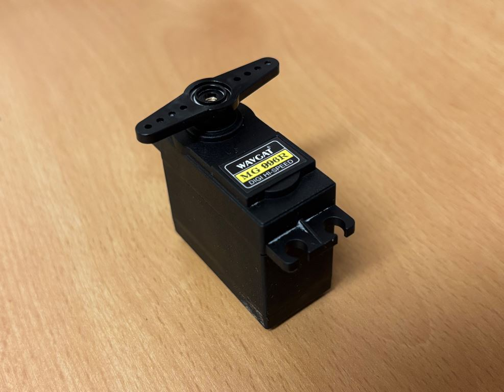
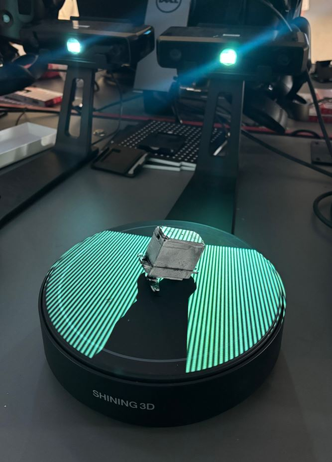
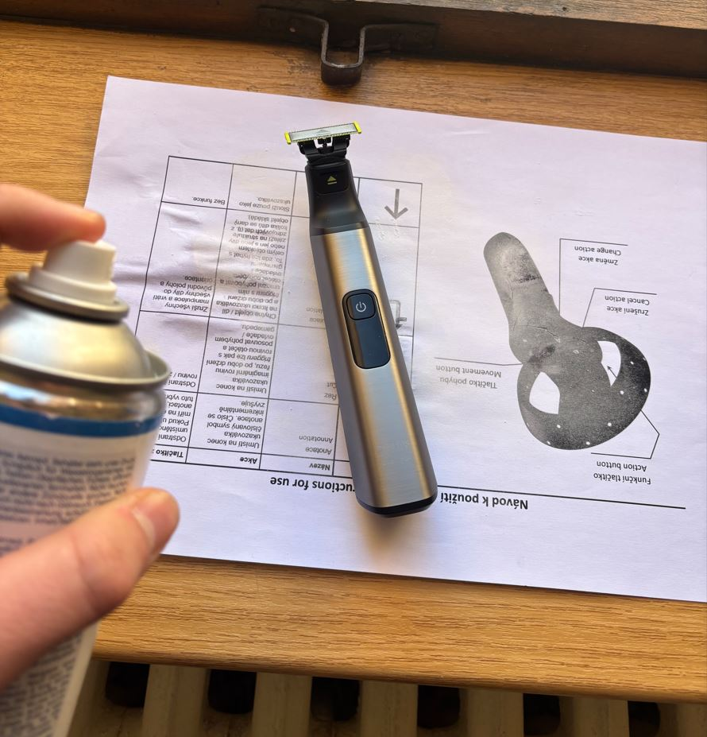
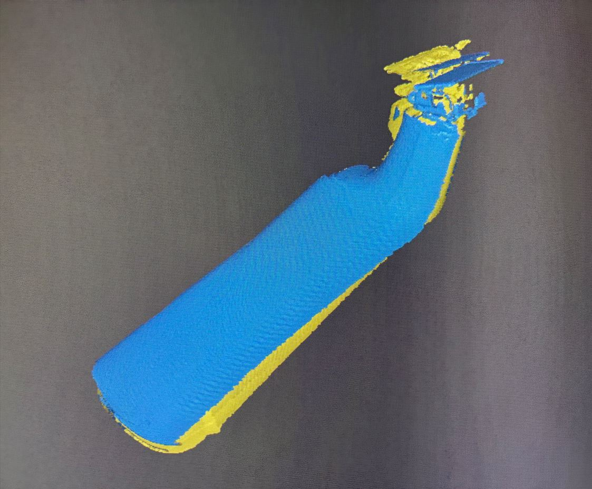
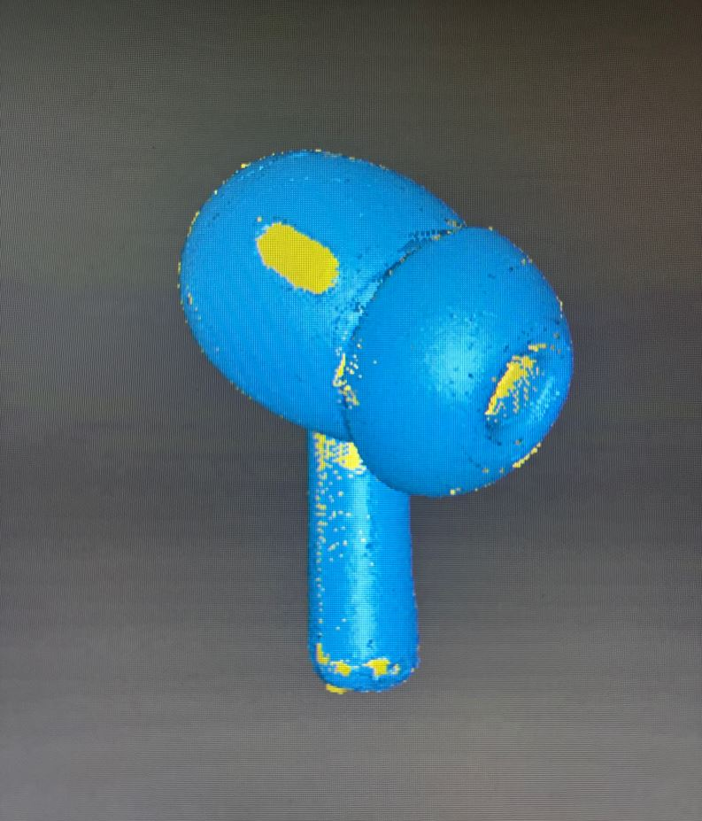
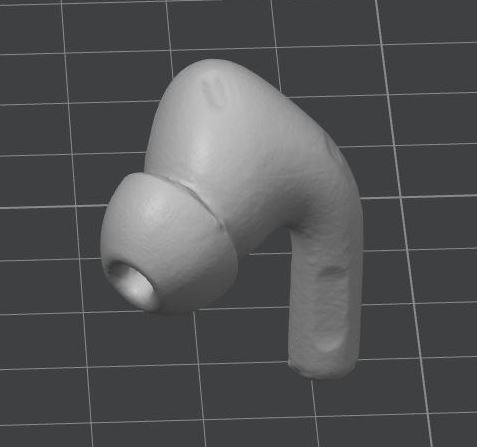
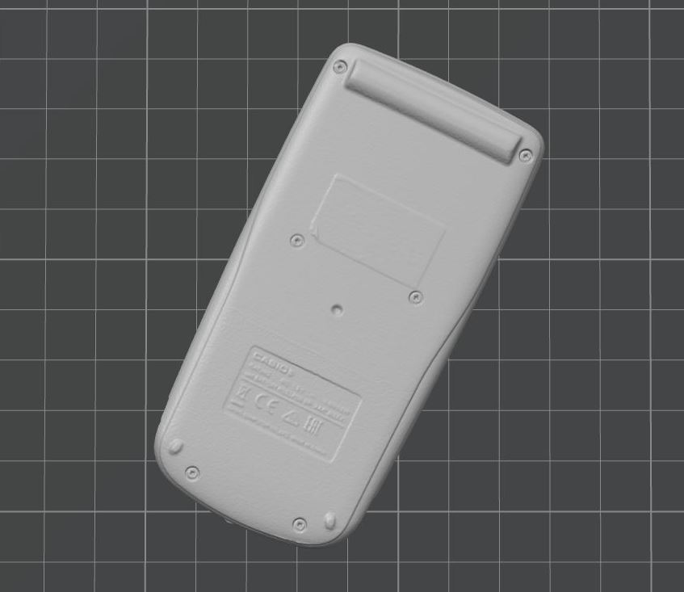

3. týden: 3D skenování a 3D tisk
Během třetího týdne bylo úkolem naskenovat nějaký objekt pomocí fotogrammetrie nebo 3D skeneru a
vymodelovat objekt, který by se těžko vyráběl subtraktivní metodou.
3D skenování
Mým cílem bylo naskenovat objekt, jehož digitální model využiji ve svém závěrečném projektu. Zvolil jsem tedy servo MG996R spolu s nasazovací pákou, u kterých potřebuji znát přesné rozměry.

K měření jsem využil školní 3D skener EinScan-SE. Protože tento přístroj má potíže při snímání černých objektů, nastříkal jsem povrch serva bílým skenovacím sprejem. Ten je sice snadno stíratelný, což usnadňuje čištění, ale vyžaduje opatrnou manipulaci při schnutí a při přenosu na skener.

V ovládacím softwaru jsem nastavil skenování s automatickou rotací objektu. Použil jsem nastavení: rychlost 10, 8 snímků na jednu otočku. Vzhledem ke geometrické jednoduchosti modelu jsem zvolil metodu Turntable Alignment, která zarovnává data podle úhlu otočení podložky. Při každém pokusu se však objevila stejná chyba - nové skeny byly vůči těm předchozím, vzniklým v rámci stejné otočky, špatně zarovnány. Nepomohla změna orientace serva, kalibrace přístroje ani přepnutí na metodu Feature Alignment.
Zpětně mě napadá, že by problém možná vyřešilo použití metody Feature Alignment a přidání nějakého geometricky složitějšího objektu, díky čemuž by skener získal záchtné body pro zarovnání skenů. Tento objekt bych následně v postprocesingu odstranil.

Jako záložní variantu jsem si připravil holicí strojek OneBlade. Jeho model plánuji využít pro návrh a tisk vlastního stojánku. Černé části jsem opět opatřil křídovým nástřikem. Problémy se špatným zarovnáním se však bohužel opakovaly i u tohoto objektu.


Přesunul jsem se proto k jinému pracovišti (skener č. 4) a zvolil nový objekt – sluchátko. Tento sken se vydařil hned napoprvé. V postprocesingu jsem pomocí klávesy Shift ručně odstranil přebytečné body (šum) v okolí objektu. Při převodu point cloudu na mesh jsem zvolil střední kvalitu a režim watertight mesh (uzavřený model).


Zbývající čas jsem využil ke skenování kalkulačky. Vrátil jsem se k původnímu stanovišti, ale tentokrát jsem nevyužil automatické otáčení. Kalkulačku jsem polohoval manuálně pomocí stojánku a každý snímek spouštěl samostatně.

Tento postup byl úspěšný a jednotlivé vrstvy na sebe přesně navazovaly. Případné artefakty (šum, držák zachycený ve skenu) jsem průběžně odmazával. Celkem jsem provedl 20 skenů z různých úhlů, dokud nebyl model kompletní a bez děr. Výsledný mesh jsem opět generoval ve střední kvalitě jako uzavřený objekt.



3D tisk - Stojan pro hexapoda
Úkol z tohoto týdne jsem se rozhodl využít k rozpracování svého závěrečného projektu - hexapoda. Prvním krokem bylo vytvoření stojanu. Ten mi umožní robota bezpečně programovat a testovat, aniž by se jeho nohy dotýkaly země a hrozilo poškození. Aby byl stojan stabilní a nepřevrhl se, tvoří jeho základnu pětikilový kovový kotouč, ze kterého vychází 21 cm dlouhá kovová tyč.

Bylo nutné navrhnout tři plastové díly: jeden pro fixaci tyče v čince a dva pro horní část, která bude sloužit jako samotný držák hexapoda. K modelování jsem použil Fusion 360. U každého dílu jsem začínal tvorbou náčrtu (sketch). Využíval jsem parametrické modelování a dával jsem si pozor na to, aby byl každý náčrt plně definovaný (fully constrained). Díky tomu mohu v budoucnu snadno měnit klíčové rozměry stojanu.
Před tiskem rozměrnějších dílů doporučuji provést malý testovací tisk, abyste ověřili správné tolerance otvorů pro šrouby. Jelikož už ale mám tiskárnu otestovanou z dřívějška, tento krok jsem přeskočil. Pro šrouby M3 spojující horní dva díly jsem použil průměr otvoru 3 mm. Během prvního tisku horního držáku jsem udělal fixační zobáčky stejně velké jako otvory v základně hexapoda a díly tak do sebe nezapadaly. Před druhým tiskem jsem proto zobáčky pomocí funkce Offset Face o 0,15 mm zmenšil.

Hotové modely jsem exportoval (Utilities -> 3D print) do formátu 3MF a připravil k tisku v Bambu Studiu. Jako materiál jsem zvolil PLA. Tiskl jsem na 3D tiskárně Bambu Lab A1 Mini s tryskou o průměru 0,4 mm a s následujícím nastavením:
- Profil: 0.20 mm Standard @BBL A1M
- Nozzle temperature (teplota trysky): 210 °C
- Bed temperature (teplota podložky): 65 °C
- Wall loops (perimetry): 4
- Sparse infill density (hustota výplně): 20 %
- Sparse infill pattern (vzor výplně): Gyroid
- Outer wall speed (rychlost tisku vnější stěny): 60 mm/s
Zbylá nastavení jsem nechal na výchozích hodnotách vybraného tiskového profilu.


Po sestavení měl spodní plastový díl v otvoru činky drobnou vůli. Vyřešil jsem to tak, že jsem stěny otvoru vyložil igelitovým sáčkem a díl jsem do něj zatlačil pomocí svěráku. Igelit vyplnil volný prostor a stojan teď drží velmi pevně. Horní dva díly jsem sešrouboval pomocí šroubů M3 × 8 mm.

3D tisk - Základna a část nohy hexapoda
Po dokončení stojanu jsem se přesunul k výrobě spodní části základny a kyčelních kloubů samotného robota. Základna má šestiúhelníkový půdorys a je navržena tak, aby se přesně vešla na tiskovou plochu o rozměrech 18 × 18 cm. Kromě mechanické pevnosti musí mít dostatek prostoru pro baterii, dva PWM moduly PCA9685 pro řízení motorů a šest servomotorů MG996R, které budou zajišťovat horizontální pohyb nohou.
Aby celá hmotnost robota neležela pouze na hřídelích servomotorů, umístil jsem na jejich spodní stranu opěrné ložisko, které převezme část zátěže. Pro úsporu místa a lepší uchycení serva jsem odstranil jeho původní spodní kryt. Místo něj jsem navrhl kryt nový, který již obsahuje prostor pro ložisko a je přímo integrován do těla základny. Servo je k základně upevněno přes dlouhé šrouby, které držely jeho původní kryt. Moduly PCA9685 jsem přišrouboval pomocí šroubů M2 × 8 mm do otvorů o průměru 2 mm.

Při tvorbě náčrtu šestiúhelníkové základny ve Fusion 360 jsem pracoval pouze na jedné šestině modelu. Tu jsem následně pětkrát zkopíroval kolem středové osy pomocí nástroje Circular Pattern.


Základnu jsem tiskl se stejnými parametry jako stojan. Kvůli složitější geometrii jsem používal podpěry. Nastavil jsem je takto:
- Type: Tree (auto)
- Top Z distance (mezera v ose Z): 0.25 mm
Ostatní parametry u podpor zůstaly výchozí.


Odstraňování stromových podpor pomocí malých štípacích kleští a skalpelu mi zabralo zhruba dvacet minut. Zanechaly po sobě hrubší povrch, což však nevadí, jelikož byly zespodu robota a většina hrubého povrchu je překryta ložisky.


Díl tvořící kyčel robota je navržen tak, aby servomotor držel ze dvou stran - shora je přišroubován k hřídeli a zespodu se opírá o zmíněné ložisko, díky čemuž není veškerá zátěž na hřídeli. Pro lepší přenos krouticího momentu má v sobě tento díl otvor ve tvaru nasazovací páky serva. Původně jsem chtěl model páky získat 3D skenováním, ale jak jsem psal výše, to se bohužel nepovedlo. Model jsem tedy stáhl z internetu a pomocí nástroje Project jsem do horního dílu kyčle promítnul jeho obrys. Pomocí funkce Offset Face jsem vytvořil několik testovacích dílů s různými vůlemi a vytiskl je. Páka nejlépe zapadala do otvoru s offsetem 0,17 mm.
Jednotlivé části nohy jsou navzájem spojeny pomocí šroubů M2 × 12 mm a matek zapuštěných do plastových dílů. Tyto díly jsem tiskl bez podpor se stejným nastavením jako v předchozích případech.


A tady je fotka výsledku: